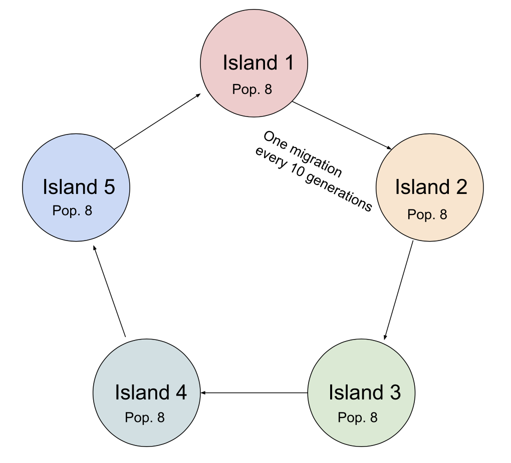
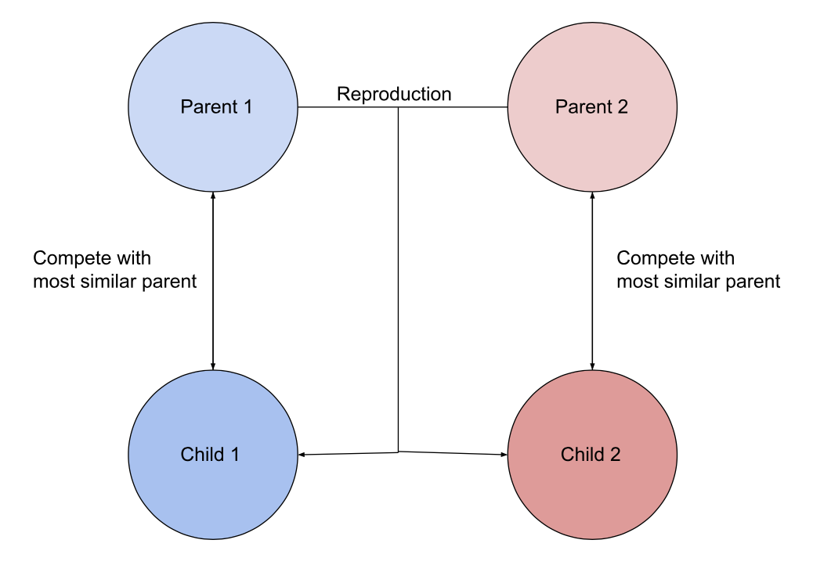

Overview
Aleph is an evolutionary global optimization algorithm built to measure how more complex implementations of evolutionary operators and population structure affect algorithm performance.
In particular, Alpeh implements deterministic crowding and island distribution, which add complexity to a standard genetic algorithm. This research primarily addresses how the performances of various algorithm designs compare across various benchmark problems as problem dimensionality increases. As a baseline, Alpeh performances are compared with an established implementation from Pymoo.
Rather than assuming that a more elaborate algorithm
necessarily performs better, I evaluate Aleph against
established optimization implementations using
controlled computational experiments.
Algorithm Architecture
Aleph investigates evolutionary search through
interacting subpopulations. Each population evolves
independently between migration events, allowing
different regions of the search space to be explored.

FIGURE 01
Island Model
The population is divided into smaller
subpopulations, or islands. Each island
evolves independently, with migration
allowing individuals to move between
populations.

FIGURE 02
Deterministic Crowding
Offspring compete with similar parent
individuals for survival. This creates
localized competition and is intended to
help preserve distinct regions of the
population.

FIGURE 03
Evolutionary Operators
Mutation, reproduction, selection, and
migration determine how candidate solutions
change and compete throughout the
optimization process.
Experimental Methodology
The performance of Alpeh is compared and contrasted against the simplest genetic algorithm implementation from Pymoo on various benchmarks accessible through scipy. Five benchmark problems shed light on the relative strengths and weakness of each algorithm confronting different shapes in solution space: Sphere, Ackley, Rastrigin, Griewank, and Rosenbrock. Furthermore, each benchmark problem tests each algorithm across 10, 30, and 50 dimensional solution space, sizing up the how performances comparatively change as problems grow more complex. To fairly compare each algorithm, a fixed number of calls to the objective function is set at 40,000, and the relative distribution of these calls across population size and number of generations is calculated for each algorithm to optimize its performance. Sliding along the scale of a small population with many generations towards a large population with few generations, Pymoo uses a population of 200 members over 200 generations, while Alpeh with island distribution uses a population of 40 members across 1000 generations. Furthermore, the mutation rate is optimized for each algorithm and the island distribution is optimized across 5 different network topologies and various migration intervals. For each benchmark and each dimensionality, 30 runs are performed per algorithm to determine statistical distribution of convergence and final error.
Reproducibility and Further Work
Aleph is an ongoing project. The source code behind Aleph’s implementation and benchmark testing are publicly available on GitHub. Future work could further examine the experiments performed here in greater dimensions to see if Aleph continues to improve over Pymoo. Furthermore, next steps could examine how different topologies and migration parameters of the island distribution perform on various problem types.